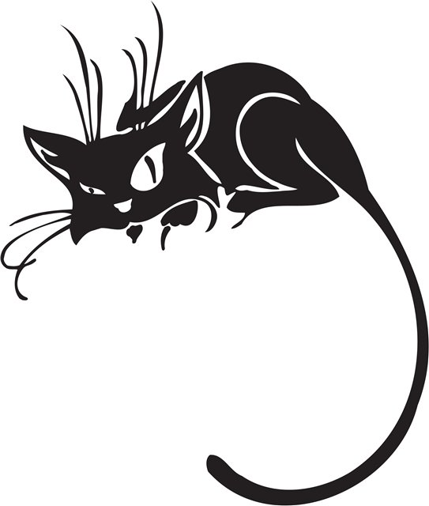

Неуравновешенное психическое состояние... склонен к агрессивному неадекватному поведению...одним словом...лапочка.
 Чёрные кошки — объект суеверий различных народов. По мнению одних суеверных, служит предвестником несчастья (например, если чёрная кошка перебегает дорогу, то это приводит к дальнейшим неудачам в жизни). По мнению других суеверных, например, живущая в доме чёрная кошка приносит удачу. Предрассудки не зависят от породы кошки и касаются только её окраса.
Интерпретация образа чёрных котов и кошек в разных культурах и народах различается. В Великобритании чёрная кошка считается символом удачи. Шотландцы верят, что чёрный кот, зашедший в дом, подарит богатство и процветание, а у хозяйки чёрного кота будет много поклонников[1]. Тем не менее, в западной культуре чёрные кошки часто являются символом дурного предзнаменования. Чёрный кот — любимец и помощник ведьм (как некоторые другие существа чёрного цвета, например ворон). В произведениях устного народного творчества чёрный кот часто принимал человеческий вид и шпионил за людьми по приказу ведьм или демонов. В Средние века эти предрассудки заставляли людей убивать чёрных кошек и котов. Это отчасти привело к увеличению популяции крыс и распространению бубонной чумы и других болезней, переносимых грызунами[2][3]. Иногда сверхъестественные свойства, приписываемые чёрным котам и кошкам, считаются положительными, например моряки полагают, что корабельный кот чёрного окраса принесёт удачу в плавании. Чёрных котов часто держат дома жёны моряков и рыбаков, веря, что это обезопасит их мужей, находящихся в плавании. (см. Корабельный кот). Как определило американское исследование, чёрных котов и кошек реже других забирают из приютов для животных[4].